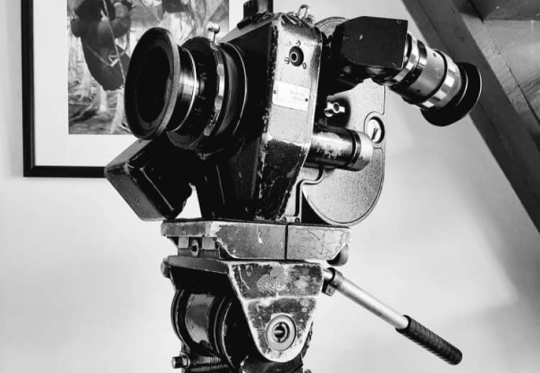

{% extends 'main/base.html' %}
{% block title %}
about
{% endblock %}
{% block content %}

Конвас
"Конвас - профессиональный аппарат для киносъёмок на 35мм плёнке с рук и со штатива. Именно такой камерой мы полностью сняли "Селкинчек". И вспоминается сцена, когда мальчик бежит с ракушкой среди чуйника, которую долго обсуждали, как снимать. Мы с Хасаном хотели с рук, но Талгат Асыранкулов настаивал, что таким образом нарушим стилистику и предлагал статичную камеру на штативе, но за счет внутрикадрового монтажа добиться нужной нам экспрессии. В конце концов, я настоял, чтобы сняли в движении, как бы камера сопереживает герою, а не отстраненно наблюдает. И тут возникла дилемма, каким образом стабилизировать изображение, не имея под рукой стэдикам, о котором и мечтать не могли из-за скудного бюджета. Хасан, в присущей ему манере, спокойно произнёс: "Я сниму"... Перед съёмкой подходит ко мне и говорит: "Октан..." (так он меня называет, а это бесцветная жидкость в нефти, бензине...). Точнее, тогда Хасан сказал: "Доцент..." (я все время думал, так он меня величает, сравнивая режиссёра с ученым преподавателем ВУЗа, блин, потом выяснилось, оказывается, из-за фильма "Джентельмены удачи", то есть, в его представлении во мне сочетаются два образа: бандита и доброго воспитателя детского сада). Если Хасану что-нибудь нужно от меня, начинает хахмить: "Доцент, керосинка кончилась" (кстати, в керосине тоже есть Октан). Так вот, возвращаясь к съёмкам, он подошёл ко мне и говорит: "Доцент, налей 200 грамм и я сниму, как тебе надо." Просьба оператора-постановщика - всегда закон, тут же послали "гонца", и Хасан залпом выпил полный граненый стакан водки, взял Конвас и после команды "Начали" побежал вместе с мальчиком, снимая его на ходу. Не знаю, сколько сделали дублей, в итоге на экране получили выразительную картинку, полную эмоций. И, что удивительно, с безупречным фокусным расстоянием.
На дискуссиях после фестивальных показов не раз спрашивали, как снимали данный эпизод, и все были уверены, что со стэдикамом, а я уточнял, нет, это Хасан Кыдыралиев. А когда меня просят его охарактеризовать, как оператора, я говорю "Хасан - мои глаза."
{% endblock %}